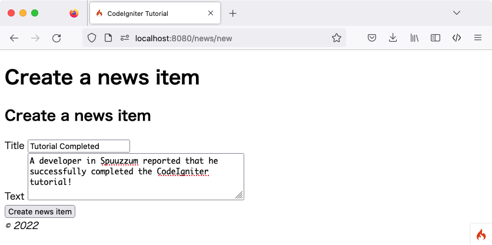
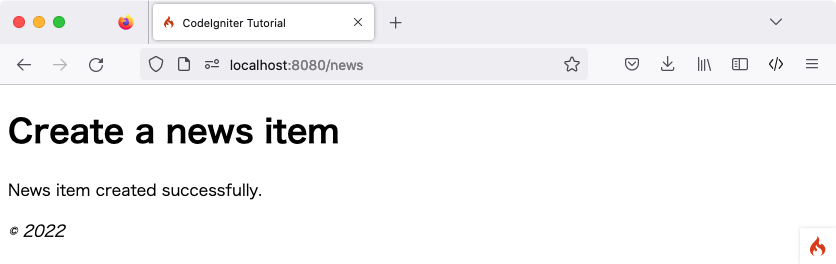

뉴스 항목 만들기
이제 CodeIgniter를 사용하여 데이터베이스에서 데이터를 읽는 방법을 알게 되었지만, 아직 데이터베이스에 정보를 기록하지는 않았습니다. 이 섹션에서는 이 기능을 포함하도록 이전에 만든 뉴스 컨트롤러와 모델을 확장합니다.
CSRF 필터 활성화
폼을 만들기 전에 CSRF 보호를 활성화해 봅시다.
app/Config/Filters.php 파일을 열고 $methods 속성을 다음과 같이 업데이트합니다:
<?php
namespace Config;
use CodeIgniter\Config\BaseConfig;
class Filters extends BaseConfig
{
// ...
public array $methods = [
'POST' => ['csrf'],
];
// ...
}
모든 POST 요청에 대해 CSRF 필터가 활성화되도록 설정합니다. CSRF 보호에 대한 자세한 내용은 Security 라이브러리에서 읽어볼 수 있습니다.
경고
일반적으로 $methods 필터를 사용하는 경우 자동 라우팅(레거시)을 비활성화해야 합니다. 왜냐하면 Auto Routing (Legacy)는 모든 HTTP 메서드가 컨트롤러에 접근하는 것을 허용하기 때문입니다. 예상치 못한 메서드로 컨트롤러에 접근하면 필터를 우회할 수 있습니다.
라우팅 규칙 추가
CodeIgniter 애플리케이션에 뉴스 항목을 추가하기 전에 app/Config/Routes.php 파일에 추가 규칙을 추가해야 합니다. 파일에 다음 내용이 포함되어 있는지 확인하세요:
<?php
// ...
use App\Controllers\News;
use App\Controllers\Pages;
$routes->get('news', [News::class, 'index']);
$routes->get('news/new', [News::class, 'new']); // Add this line
$routes->post('news', [News::class, 'create']); // Add this line
$routes->get('news/(:segment)', [News::class, 'show']);
$routes->get('pages', [Pages::class, 'index']);
$routes->get('(:segment)', [Pages::class, 'view']);
'news/new'에 대한 라우트 지침은 뉴스 항목 생성 폼이 제대로 표시되도록 'news/(:segment)' 지침보다 먼저 배치됩니다.
$routes->post() 라인은 POST 요청에 대한 라우터를 정의합니다. 이는 URI 경로 /news에 대한 POST 요청과만 일치하며, 이를 News 클래스의 create() 메서드에 매핑합니다.
다양한 라우팅 유형에 대한 자세한 내용은 라우팅 규칙 설정에서 읽어볼 수 있습니다.
폼 생성
news/create 뷰 파일 생성
데이터베이스에 데이터를 입력하려면 저장할 정보를 입력할 수 있는 폼을 만들어야 합니다. 즉, 제목(title)과 텍스트(text)를 위한 두 개의 필드가 있는 폼이 필요합니다. 슬러그(slug)는 모델에서 제목을 기반으로 생성할 것입니다.
app/Views/news/create.php에 새 뷰를 생성합니다.
<h2><?= esc($title) ?></h2>
<?= session()->getFlashdata('error') ?>
<?= validation_list_errors() ?>
<form action="/news" method="post">
<?= csrf_field() ?>
<label for="title">Title</label>
<input type="input" name="title" value="<?= set_value('title') ?>">
<br>
<label for="body">Text</label>
<textarea name="body" cols="45" rows="4"><?= set_value('body') ?></textarea>
<br>
<input type="submit" name="submit" value="Create news item">
</form>
여기에는 아마 생소해 보이는 것이 네 가지 정도 있을 것입니다.
session() 함수는 세션 객체를 가져오는 데 사용되며, session()->getFlashdata('error')는 CSRF 보호와 관련된 에러를 사용자에게 표시하는 데 사용됩니다. 하지만 기본적으로 CSRF 유효성 검사가 실패하면 예외가 발생하므로 아직은 작동하지 않습니다. 자세한 내용은 실패 시 리다이렉션를 참조하세요.
폼 헬퍼(Form Helper)에서 제공하는 validation_list_errors() 함수는 폼 유효성 검사와 관련된 에러를 보고하는 데 사용됩니다.
csrf_field() 함수는 일반적인 공격으로부터 보호하는 데 도움이 되는 CSRF 토큰을 포함한 숨겨진(hidden) 입력을 생성합니다.
폼 헬퍼(Form Helper)에서 제공하는 set_value() 함수는 에러가 발생했을 때 이전에 입력한 데이터를 다시 보여주는 데 사용됩니다.
뉴스 컨트롤러
News 컨트롤러로 돌아갑니다.
폼을 표시하기 위해 News::new() 추가
먼저, 작성한 HTML 폼을 표시하는 메서드를 만듭니다.
<?php
namespace App\Controllers;
use App\Models\NewsModel;
use CodeIgniter\Exceptions\PageNotFoundException;
class News extends BaseController
{
// ...
public function new()
{
helper('form');
return view('templates/header', ['title' => 'Create a news item'])
. view('news/create')
. view('templates/footer');
}
}
helper() 함수를 사용하여 Form 헬퍼를 로드합니다. 대부분의 헬퍼 함수는 사용하기 전에 로드되어야 합니다.
그런 다음 생성된 폼 뷰를 반환합니다.
뉴스 항목을 생성하기 위해 News::create() 추가
다음으로 제출된 데이터로부터 뉴스 항목을 생성하는 메서드를 만듭니다.
여기서 세 가지 작업을 수행할 것입니다:
제출된 데이터가 유효성 검사 규칙을 통과했는지 확인합니다.
뉴스 항목을 데이터베이스에 저장합니다.
성공 페이지를 반환합니다.
<?php
namespace App\Controllers;
use App\Models\NewsModel;
use CodeIgniter\Exceptions\PageNotFoundException;
class News extends BaseController
{
// ...
public function create()
{
helper('form');
$data = $this->request->getPost(['title', 'body']);
// Checks whether the submitted data passed the validation rules.
if (! $this->validateData($data, [
'title' => 'required|max_length[255]|min_length[3]',
'body' => 'required|max_length[5000]|min_length[10]',
])) {
// The validation fails, so returns the form.
return $this->new();
}
// Gets the validated data.
$post = $this->validator->getValidated();
$model = model(NewsModel::class);
$model->save([
'title' => $post['title'],
'slug' => url_title($post['title'], '-', true),
'body' => $post['body'],
]);
return view('templates/header', ['title' => 'Create a news item'])
. view('news/success')
. view('templates/footer');
}
}
위의 코드는 많은 기능을 추가합니다.
데이터 가져오기
먼저, 프레임워크에 의해 컨트롤러에 설정된 IncomingRequest 객체인 $this->request를 사용합니다.
사용자가 보낸 POST 데이터에서 필요한 항목들을 가져와 $data 변수에 설정합니다.
데이터 유효성 검사
다음으로, 컨트롤러에서 제공하는 헬퍼 함수인 validateData()를 사용하여 제출된 데이터를 검증합니다. 이 경우 제목(title)과 본문(body) 필드는 필수이며 특정 길이를 충족해야 합니다.
위에서 보여준 것처럼 CodeIgniter는 강력한 유효성 검사 라이브러리를 가지고 있습니다. Validation 라이브러리에서 더 자세한 내용을 읽어볼 수 있습니다.
유효성 검사가 실패하면 방금 만든 new() 메서드를 호출하여 HTML 폼을 다시 반환합니다.
뉴스 항목 저장
유효성 검사가 모든 규칙을 통과하면 $this->validator->getValidated()를 통해 검증된 데이터를 가져와 $post 변수에 설정합니다.
NewsModel이 로드되고 호출됩니다. 이는 뉴스 항목을 모델로 전달하는 역할을 합니다. save() 메서드는 기본 키(primary key)와 일치하는 배열 키를 찾는지 여부에 따라 레코드를 자동으로 삽입하거나 업데이트합니다.
여기에는 새로운 함수 url_title()이 포함되어 있습니다. URL 헬퍼에서 제공하는 이 함수는 전달된 문자열에서 모든 공백을 대시(-)로 바꾸고 모든 문자를 소문자로 만듭니다. 이렇게 하면 URI를 만드는 데 적합한 멋진 슬러그가 생성됩니다.
성공 페이지 반환
이 작업이 끝나면 성공 메시지를 표시하기 위해 뷰 파일이 로드되어 반환됩니다. app/Views/news/success.php에 뷰를 만들고 성공 메시지를 작성하세요.
다음과 같이 간단할 수 있습니다:
<p>News item created successfully.</p>
NewsModel 업데이트
남은 일은 모델이 데이터를 올바르게 저장할 수 있도록 설정되어 있는지 확인하는 것입니다. 사용된 save() 메서드는 기본 키의 존재 여부에 따라 정보를 삽입해야 할지, 아니면 기존 행을 업데이트해야 할지 결정합니다. 이 경우 id 필드가 전달되지 않으므로 news 테이블에 새 행을 삽입합니다.
하지만 기본적으로 모델의 삽입 및 업데이트 메서드는 어떤 필드가 안전하게 업데이트될 수 있는지 알지 못하기 때문에 실제로 데이터를 저장하지 않습니다. NewsModel을 수정하여 $allowedFields 속성에 업데이트 가능한 필드 목록을 제공하세요.
<?php
namespace App\Models;
use CodeIgniter\Model;
class NewsModel extends Model
{
protected $table = 'news';
protected $allowedFields = ['title', 'slug', 'body'];
}
이 새로운 속성에는 데이터베이스에 저장을 허용할 필드들이 포함됩니다. id를 제외한 것을 보셨나요? 그 이유는 데이터베이스에서 자동 증가(auto-incrementing) 필드이므로 직접 다룰 일이 거의 없기 때문입니다. 이는 대량 할당 취약성(Mass Assignment Vulnerabilities)으로부터 보호하는 데 도움이 됩니다. 만약 모델에서 타임스탬프를 처리하고 있다면 그 필드들도 제외해야 합니다.
뉴스 항목 만들기
이제 CodeIgniter를 설치한 로컬 개발 환경의 브라우저에서 URL 뒤에 /news/new를 추가하세요. 뉴스를 추가하고 직접 만든 여러 페이지들을 확인해 보세요.
{kind=link}

{kind=link}

축하합니다
방금 첫 번째 CodeIgniter4 애플리케이션을 완성했습니다!
아래 다이어그램은 여러분이 생성하거나 수정한 모든 파일이 포함된 프로젝트의 app 폴더를 보여줍니다.
app/
├── Config
│ ├── Filters.php (Modified)
│ └── Routes.php (Modified)
├── Controllers
│ ├── News.php
│ └── Pages.php
├── Models
│ └── NewsModel.php
└── Views
├── news
│ ├── create.php
│ ├── index.php
│ ├── success.php
│ └── view.php
├── pages
│ ├── about.php
│ └── home.php
└── templates
├── footer.php
└── header.php